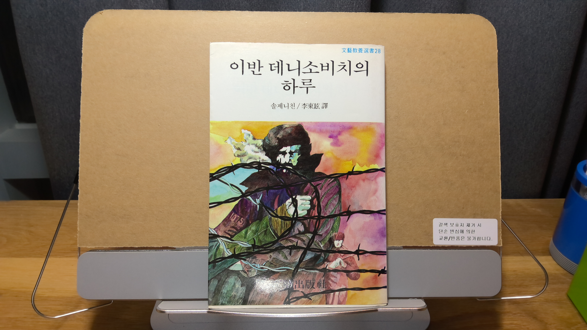
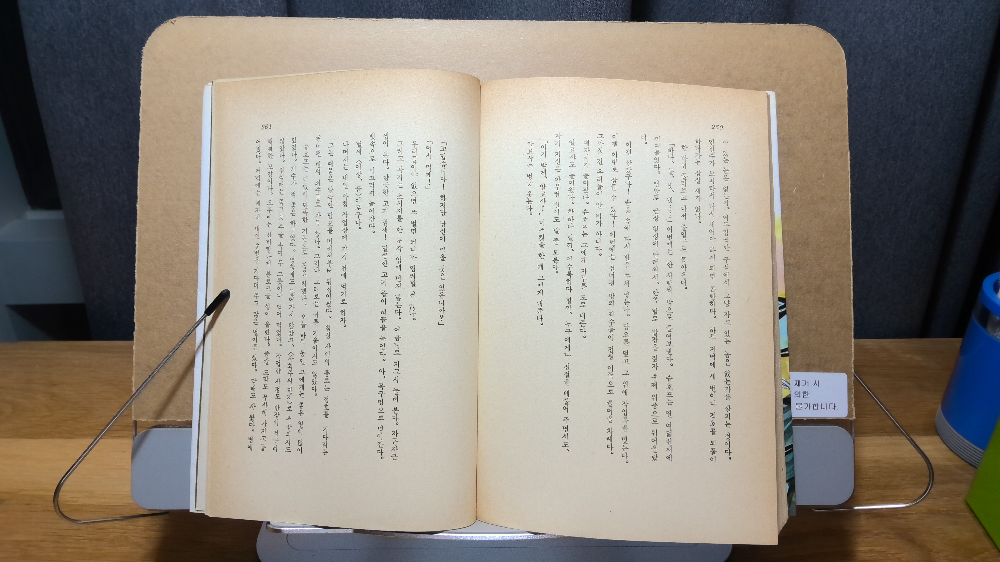
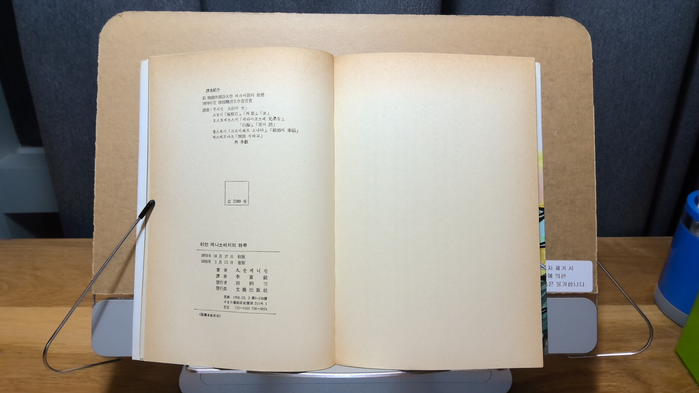

이반 데니소비치의 하루
04/09/206

솔제니친행복감이다.
문학
시베리아 강제 노동 수용소 10년의 복역 기간 중 8년째의 하루를 서글프게 그려낸 소설에 대해
행복이란 말을 가져다 붙이는 것도 이상하지만 30여년 동안 수십 번을 읽은 지금,
전체를 관통하는 감정은 행복감이라고 생각한다.
행복이란 말을 가져다 붙이는 것도 이상하지만 30여년 동안 수십 번을 읽은 지금,
전체를 관통하는 감정은 행복감이라고 생각한다.
인생의 행복을 고통이 없는 것으로 정의하면, 주인공 슈호프는 하루종일 수많은 위기 상황을 만났지만
어떤 방법으로든 해결하여 무사히 오늘 깨어났을 때 보다 훨씬 나은 상태로 잠을 청한다.
"슈호프는 더없이 만족한 기분으로 잠을 청했다."
어떤 방법으로든 해결하여 무사히 오늘 깨어났을 때 보다 훨씬 나은 상태로 잠을 청한다.
"슈호프는 더없이 만족한 기분으로 잠을 청했다."

- 1986년 재판본이다.

내게도 몇 권 없는 세로쓰기 제본이다.
당연한 듯 국한문 혼용도 아니라 한자어는 한문으로만 쓰여 있다.
이걸 어찌 꾸역꾸역 읽을 수 있다는 것도 신기할 뿐이다.
인지가 없는데 우리나라가 국제 저작권 협약에 가입한 시기가 1987년이라
86년도에는 당연한 듯 해적판을 대놓고 유통해도 되는 시기긴 하다.
86년도에는 당연한 듯 해적판을 대놓고 유통해도 되는 시기긴 하다.